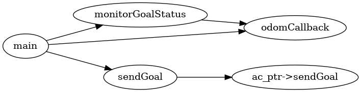
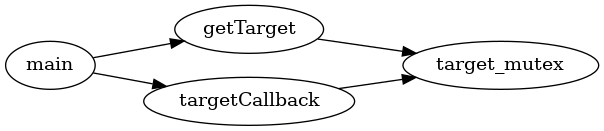

|
Assignment2_part1
1.0
|
This project consists of two key components:
These nodes work together in a simulation system to handle goal coordination and tracking.
This node is responsible for interacting with a ROS action server. It sends goals and monitors the action's status. The Action Client Node performs the following operations:
Below is the function call diagram that illustrates the key functions involved in the Action Client Node:

This file implements the Action Client Node, handling goal sending, status monitoring, and publishing position/velocity data.
The Target Service Node provides a service to return the current target coordinates and updates the target coordinates based on incoming messages. It performs the following tasks:
get_target service that responds with the current target coordinates (x, y).position_velocity topic to update the internal target coordinates.Below is the function call diagram for the Target Service Node:

This file implements the Target Service Node, handling the service and subscription to update target coordinates.
The following are the source files for both nodes:
action_client_node.cpptarget_service_node.cpp
1.8.17